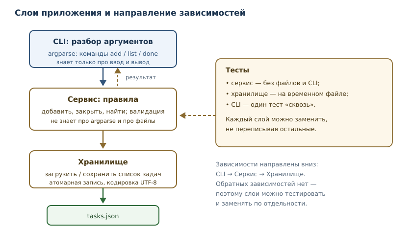

Проект: консольный менеджер задач
Полный проект: CLI на argparse, сервисный слой, JSON-хранилище, тесты и упаковка.
В этой главе
До сих пор каждая глава давала отдельный инструмент. В проекте инструменты собираются в систему: нужно спроектировать слои, договориться о формате данных, обработать ошибки, написать тесты, упаковать приложение и объяснить, как его запускать. Именно это отличает «умею писать код» от «умею делать продукт».
Мы построим менеджер задач — консольное приложение, которое хранит задачи в JSON-файле и поддерживает команды добавления, просмотра и закрытия. Проект небольшой по объёму, но содержит все инженерные элементы настоящего приложения: слои, валидацию, атомарную запись, коды возврата, тесты и точку входа.
46.1 Зачем этот проект
Небольшой проект позволяет пройти полный цикл разработки без «учебных упрощений»: от требований и архитектуры до тестов, упаковки и релиза. Именно на таком масштабе видно, зачем нужны слои, зачем отделять правила от интерфейса и почему «работает у меня» — не критерий готовности.
46.2 Что должно получиться
Функциональные требования:
tasks add "Купить хлеб"— добавить задачу.tasks list— показать все задачи с идентификаторами и статусом.tasks done 3— отметить задачу выполненной.tasks remove 3— удалить задачу.- Данные сохраняются между запусками в
tasks.json.
Нефункциональные требования, без которых проект не считается готовым:
- детерминизм: одинаковые команды на одинаковых данных дают одинаковый вывод;
- коды возврата:
0— успех,1— ошибка предметной области (нет задачи, пустое название),2— неверные аргументы; - устойчивость к сбоям: файл не должен остаться частично записанным;
- тестируемость: логику можно проверить без запуска CLI;
- воспроизводимость: установка зависимостей и запуск описаны одной командой.
46.3 Архитектура: три слоя
Приложение делится на три слоя, и зависимости идут строго в одну сторону.

- CLI знает про аргументы, вывод и коды возврата. Он не знает, как задачи хранятся.
- Сервис содержит правила: что считается допустимым названием, как
назначаются идентификаторы, что значит «закрыть задачу». Он не знает про
argparseи файлы. - Хранилище умеет загрузить и сохранить список задач. Оно не знает, откуда пришли данные.
Такое разделение — не бюрократия. Оно позволяет тестировать правила без файлов, менять формат хранения без переписывания CLI и добавлять второй интерфейс (например, веб-API) поверх того же сервиса. Это и есть практическое следствие принципа единственной ответственности из главы 44.
46.4 Шаг 1. Модель и валидация
Начнём с типа задачи и правила проверки названия. Слой сервиса не должен доверять внешнему вводу: даже если проверка есть в CLI, сервис проверяет сам — его могут вызвать из другого места.
from dataclasses import dataclass
@dataclass
class Task:
id: int
title: str
done: bool = False
def validate_title(title: str) -> str:
title = title.strip()
if not title:
raise ValueError("название задачи не может быть пустым")
if len(title) > 200:
raise ValueError("название длиннее 200 символов")
return title
task = Task(id=1, title=validate_title(" Купить хлеб "))
print(task)
try:
validate_title(" ")
except ValueError as exc:
print(type(exc).__name__, "-", exc)
Task(id=1, title='Купить хлеб', done=False)
ValueError - название задачи не может быть пустым
Обратите внимание: strip() применяется до проверки — иначе строка из одних
пробелов считалась бы непустой. Это типичный граничный случай, который ловят
тесты, а не «здравый смысл».
46.5 Шаг 2. Сервис
Сервис хранит список задач и реализует операции. Идентификаторы выдаются монотонно и не переиспользуются: если удалить задачу 3, следующая получит 4, а не 3. Это упрощает ссылки на задачи в логах и обсуждениях.
from dataclasses import dataclass
@dataclass
class Task:
id: int
title: str
done: bool = False
# В проекте эта функция живёт в tasks/model.py и импортируется сервисом.
# Здесь она повторена, чтобы блок исполнялся отдельно.
def validate_title(title: str) -> str:
title = title.strip()
if not title:
raise ValueError("название задачи не может быть пустым")
if len(title) > 200:
raise ValueError("название длиннее 200 символов")
return title
class TaskService:
def __init__(self, tasks: list[Task]) -> None:
self._tasks = list(tasks)
self._next_id = max((task.id for task in self._tasks), default=0) + 1
def all(self) -> list[Task]:
return list(self._tasks)
def add(self, title: str) -> Task:
task = Task(id=self._next_id, title=validate_title(title))
self._tasks.append(task)
self._next_id += 1
return task
def close(self, task_id: int) -> Task:
for task in self._tasks:
if task.id == task_id:
task.done = True
return task
raise KeyError(f"задача {task_id} не найдена")
def remove(self, task_id: int) -> None:
before = len(self._tasks)
self._tasks = [task for task in self._tasks if task.id != task_id]
if len(self._tasks) == before:
raise KeyError(f"задача {task_id} не найдена")
service = TaskService([])
service.add("Купить хлеб")
service.add("Написать главу")
service.close(1)
for task in service.all():
mark = "x" if task.done else " "
print(f"[{mark}] {task.id}. {task.title}")
[x] 1. Купить хлеб
[ ] 2. Написать главу
Чтобы пример запускался отдельно, Task и validate_title повторены в этом
блоке. В проекте они лежат в tasks/model.py, а tasks/service.py импортирует
их оттуда: один тип задачи на все слои.
TaskService.add вызывает validate_title, поэтому правило из шага 1 действительно
действует: название обрезается, пустое и слишком длинное отклоняются. Тест на
границу в 200 символов проверяет именно это поведение, а не отдельную функцию.
Заметьте: all() возвращает копию списка. Если бы он возвращал внутренний
список, вызывающий код мог бы незаметно менять состояние сервиса в обход
правил — классическая ловушка изменяемых объектов из главы 18.
46.6 Шаг 3. Хранилище
Хранилище преобразует задачи в JSON и обратно. Файловое хранение (file
persistence) — сохранение состояния между запусками в файле. Требование «файл не
должен остаться частично записанным» решается атомарной записью: сначала
данные пишутся во временный файл в том же каталоге, затем os.replace подменяет
основной файл одной операцией.
import json
import os
import tempfile
from pathlib import Path
def save_tasks(path: Path, tasks: list[dict]) -> None:
path.parent.mkdir(parents=True, exist_ok=True)
fd, tmp_name = tempfile.mkstemp(dir=path.parent, prefix=".tasks-", suffix=".tmp")
try:
with os.fdopen(fd, "w", encoding="utf-8") as tmp:
json.dump(tasks, tmp, ensure_ascii=False, indent=2)
tmp.flush()
os.fsync(tmp.fileno())
os.replace(tmp_name, path)
dir_fd = os.open(path.parent, os.O_RDONLY)
try:
os.fsync(dir_fd)
finally:
os.close(dir_fd)
except BaseException:
Path(tmp_name).unlink(missing_ok=True)
raise
def load_tasks(path: Path) -> list[dict]:
if not path.exists():
return []
with open(path, encoding="utf-8") as source:
return json.load(source)
with tempfile.TemporaryDirectory() as tmp_dir:
path = Path(tmp_dir) / "tasks.json"
save_tasks(path, [{"id": 1, "title": "Купить хлеб", "done": False}])
print("после сохранения:", load_tasks(path))
print("отсутствующий файл:", load_tasks(Path(tmp_dir) / "missing.json"))
после сохранения: [{'id': 1, 'title': 'Купить хлеб', 'done': False}]
отсутствующий файл: []
Почему не просто path.write_text(...)? Потому что такая запись может быть
прервана (нет места, процесс убит) и оставить файл пустым или обрезанным.
Атомарная замена гарантирует: читатель видит либо старую версию файла целиком,
либо новую целиком.
Но атомарность для читателя и долговечность после сбоя питания — разные
гарантии. os.replace переставляет имя файла, однако данные временного файла
могут ещё не дойти до диска. Поэтому save_tasks вызывает fsync для самого
временного файла, а после замены — для каталога: первый сбрасывает содержимое,
второй фиксирует новое имя. Без этих вызовов после обрыва питания можно
увидеть старую версию или потерять только что записанную.
46.7 Шаг 4. Командная строка
argparse из стандартной библиотеки разбирает аргументы и сам формирует
справку. Подкоманды задаются через add_subparsers.
import argparse
def build_parser() -> argparse.ArgumentParser:
parser = argparse.ArgumentParser(prog="tasks", description="Менеджер задач")
sub = parser.add_subparsers(dest="command", required=True)
add = sub.add_parser("add", help="добавить задачу")
add.add_argument("title", help="название задачи")
done = sub.add_parser("done", help="закрыть задачу")
done.add_argument("id", type=int, help="идентификатор задачи")
remove = sub.add_parser("remove", help="удалить задачу")
remove.add_argument("id", type=int, help="идентификатор задачи")
sub.add_parser("list", help="показать задачи")
return parser
parser = build_parser()
print(parser.parse_args(["add", "Купить хлеб"]))
print(parser.parse_args(["done", "3"]))
Namespace(command='add', title='Купить хлеб')
Namespace(command='done', id=3)
Главная функция собирает сервис из хранилища и возвращает код. На границе
хранения словари превращаются в Task: слой сервиса не должен получать
«сырые» данные и угадывать их тип.
import sys
from dataclasses import asdict
from pathlib import Path
from tasks.model import Task
from tasks.service import TaskService
from tasks.storage import load_tasks, save_tasks
DATA_PATH = Path("tasks.json")
def format_task(task: Task) -> str:
mark = "x" if task.done else " "
return f"[{mark}] {task.id}. {task.title}"
def main(argv: list[str] | None = None) -> int:
args = build_parser().parse_args(argv)
service = TaskService([Task(**row) for row in load_tasks(DATA_PATH)])
try:
if args.command == "add":
task = service.add(args.title)
print(f"добавлена задача {task.id}")
elif args.command == "list":
for task in service.all():
print(format_task(task))
elif args.command == "done":
task = service.close(args.id)
print(f"задача {task.id} закрыта")
elif args.command == "remove":
service.remove(args.id)
print(f"задача {args.id} удалена")
save_tasks(DATA_PATH, [asdict(task) for task in service.all()])
return 0
except KeyError as exc:
print(f"ошибка: {exc.args[0]}", file=sys.stderr)
return 1
except ValueError as exc:
print(f"ошибка: {exc}", file=sys.stderr)
return 1
if __name__ == "__main__":
raise SystemExit(main())
Коды возврата — часть контракта приложения: скрипты и CI используют их, чтобы
отличить успех от ошибки. raise SystemExit(main()) превращает код в статус
завершения процесса.
$ tasks add "Купить хлеб"
добавлена задача 1
$ tasks list
[ ] 1. Купить хлеб
$ tasks done 1
задача 1 закрыта
$ tasks list
[x] 1. Купить хлеб
$ tasks remove 1
задача 1 удалена
$ tasks list
$ tasks done 99
ошибка: задача 99 не найдена
$ echo $?
1
46.8 Шаг 5. Тесты
Тестируются слои по отдельности: правила — без файлов, хранилище — на временном каталоге, CLI — одним сквозным тестом.
import pytest
from tasks.cli import main
from tasks.service import TaskService
from tasks.storage import load_tasks, save_tasks
def test_add_trims_title():
service = TaskService([])
task = service.add(" Купить хлеб ")
assert task.title == "Купить хлеб"
def test_add_rejects_empty_title():
service = TaskService([])
with pytest.raises(ValueError):
service.add(" ")
def test_add_rejects_too_long_title():
service = TaskService([])
with pytest.raises(ValueError):
service.add("я" * 201)
def test_ids_are_not_reused():
service = TaskService([])
first = service.add("первая")
service.remove(first.id)
second = service.add("вторая")
assert second.id == first.id + 1
def test_close_unknown_raises():
service = TaskService([])
with pytest.raises(KeyError):
service.close(99)
def test_store_roundtrip(tmp_path):
path = tmp_path / "tasks.json"
save_tasks(path, [{"id": 1, "title": "тест", "done": False}])
assert load_tasks(path) == [{"id": 1, "title": "тест", "done": False}]
assert load_tasks(tmp_path / "missing.json") == []
def test_cli_add_and_list(tmp_path, monkeypatch, capsys):
monkeypatch.setattr("tasks.cli.DATA_PATH", tmp_path / "tasks.json")
assert main(["add", "Купить хлеб"]) == 0
assert main(["list"]) == 0
assert "[ ] 1. Купить хлеб" in capsys.readouterr().out
$ python -m pytest -q
....... [100%]
7 passed in 0.03s
Обратите внимание на tmp_path — это встроенная фикстура pytest, создающая
временный каталог для каждого теста. Так тесты не зависят друг от друга и не
мусорят в рабочем каталоге.
46.9 Шаг 6. Упаковка и точка входа
Чтобы приложение запускалось командой tasks, его нужно установить как пакет
и указать точку входа.
[project]
name = "tasks-cli"
version = "1.0.0"
requires-python = ">=3.11"
dependencies = []
[project.scripts]
tasks = "tasks.cli:main"
[build-system]
requires = ["setuptools>=68"]
build-backend = "setuptools.build_meta"
$ uv sync
$ uv run tasks add "Купить хлеб"
добавлена задача 1
$ uv run tasks list
[ ] 1. Купить хлеб
[project.scripts] создаёт исполняемую команду, которая вызывает функцию
main. uv sync создаёт изолированное окружение по pyproject.toml и
uv.lock и устанавливает проект в режиме разработки: изменения в исходниках
видны сразу, переустанавливать не нужно. uv run выполняет команду в этом
окружении, поэтому отдельная активация venv не требуется.
46.10 Типичные ошибки проекта
- Вся логика в обработчике CLI. Тогда её нельзя протестировать без запуска процесса и нельзя переиспользовать в другом интерфейсе.
- Запись файла «как получится». Обрыв записи портит данные; нужна атомарная замена.
- Доверие к вводу. Проверка только в CLI обходится вторым вызывающим кодом; правила должны жить в сервисе.
- Молчаливое проглатывание ошибок. Пользователь должен получить понятное сообщение и ненулевой код возврата.
- Формат хранения без версии. Если завтра добавится поле, старые файлы должны читаться; заложите версию схемы или обратную совместимость.
- Тесты, зависящие от рабочего каталога. Используйте временные каталоги и явные пути.
46.11 Упражнения
1. Добавление команды
Добавьте команду tasks undone <id>, снимающую отметку выполнения. Опишите
изменения в трёх слоях: CLI, сервис, ничего ли не нужно менять в хранилище.
2. Приоритеты
Добавьте полю priority значения low, normal, high (по умолчанию
normal). Как обеспечить обратную совместимость со старыми файлами, где поля
нет?
3. Поиск
Реализуйте команду tasks find <подстрока>, выводящую задачи, в названии
которых встречается подстрока, без учёта регистра. Где должна жить эта логика?
4. Коды возврата
Составьте таблицу: команда, ситуация, сообщение, код возврата. Опишите, почему
2 (неверные аргументы) отличается от 1 (ошибка предметной области).
5. Атомарность
Объясните, что произойдёт при обрыве питания в момент записи файла: (а) при
прямой записи в tasks.json; (б) при записи во временный файл с последующей
заменой. Сформулируйте гарантию, которую даёт второй вариант.
6. Тесты на границы
Напишите тесты для validate_title: пустая строка, строка из пробелов, 200
символов, 201 символ. Какие ещё граничные случаи стоит проверить?
7. Некорректный JSON
Что должно делать приложение, если tasks.json содержит синтаксически
неверный JSON? Предложите поведение и реализуйте его.
8. Вывод и форматирование
Сделайте так, чтобы tasks list выводил задачи в порядке: сначала
невыполненные, затем выполненные, внутри — по идентификатору. Объясните, почему
сортировка должна быть в CLI, а не в сервисе.
9. Множественный вывод
Добавьте флаг --json для машиночитаемого вывода. Почему это удобнее, чем
парсить человекочитаемый текст?
10. Мини-релиз
Опишите шаги выпуска версии 1.1.0: изменения, тесты, CI, версия в
pyproject.toml, запись в CHANGELOG.md, тег. Что должно быть зелёным до
публикации?
46.12 Проверка понимания
- Зачем разделять CLI, сервис и хранилище, если приложение небольшое?
- Почему валидация должна жить в сервисе, а не только в CLI?
- Что даёт атомарная запись файла и как она реализуется?
- Почему идентификаторы не должны переиспользоваться?
- Какие коды возврата использовать и зачем они нужны?
- Почему
all()возвращает копию списка?
46.13 Что дальше
Приложение работает локально, но данные живут в одном файле и доступны только на одной машине. Следующий проект — HTTP API с базой данных: та же предметная область, но доступ по сети, одновременные запросы и другой уровень требований к надёжности.